箱體對照
四款場景探索箱由實機影片去背，保留原色；其餘使用原作箱類道具圖示。本作箱名、內容與稀有度規則維持不變。
四款探索箱
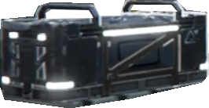
探索箱 IScene Protocol Crate I來源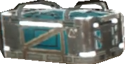
探索箱 IIScene Protocol Crate II來源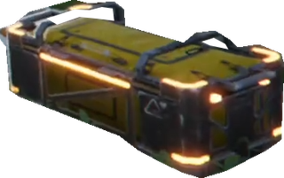
探索箱 IIIScene Protocol Crate III來源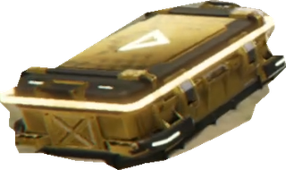
探索箱 IVScene Protocol Crate IV來源本作容器對應
基礎補給箱Scene Protocol Crate I來源制式軍需箱Scene Protocol Crate II來源加密補給箱Scene Protocol Crate III來源戰略封存匣Scene Protocol Crate IV來源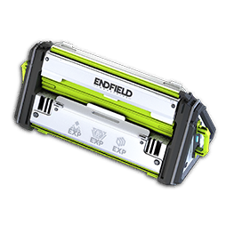
巡線急救包Multi-Purpose EXP Selection Crate來源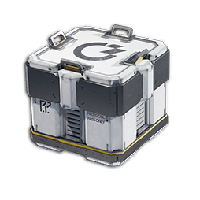
炊事班乾糧盒Exchange Crate-o-Surprise [S]來源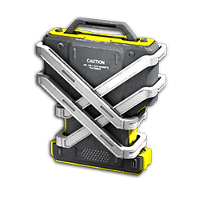
中繼器零件匣Multi-Purpose Breakthrough Selection Crate來源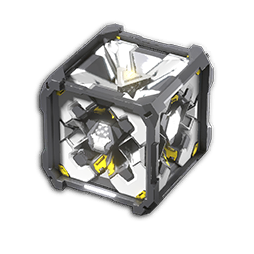
野外採樣筒Advanced Progression Selection Crate Ⅰ來源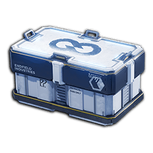
信差防潮匣Cycling Crate-o-Surprise [M]來源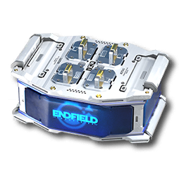
巡迴診所藥匣Skill Up Selection Crate來源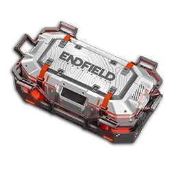
工兵爆破具箱New Horizons Weapon Supply來源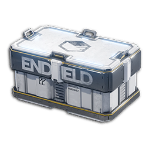
短波通訊箱Exchange Crate-o-Surprise [M]來源極地冷藏箱Scene Protocol Crate II來源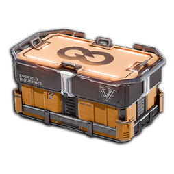
移動工坊備件箱Cycling Crate-o-Surprise [L]來源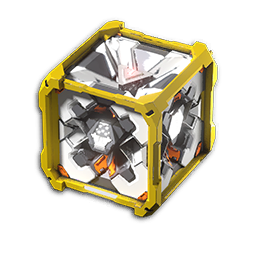
手術器械運輸箱Advanced Progression Selection Crate Ⅱ來源礦權檔案匣Multi-Purpose Breakthrough Selection Crate來源檢疫所封存箱Scene Protocol Crate III來源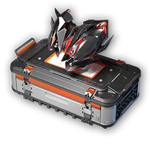
裝甲庫備件箱Weapon Supply: Gloomwald來源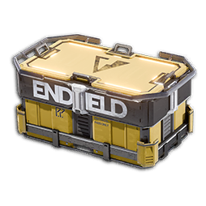
遺址保全匣Exchange Crate-o-Surprise [L]來源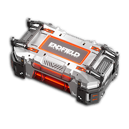
夜航密運艙Curated Weapon Supply來源深層樣本冷封匣Advanced Progression Selection Crate Ⅰ來源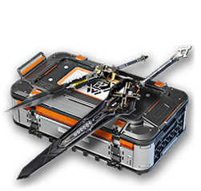
哨戒軍械儲備箱Weapon Supply: Ink Scroll來源臨界醫療封存艙Skill Up Selection Crate來源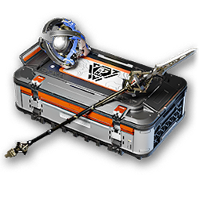
失聯據點遺留箱Weapon Supply: Blighted Sea來源無燈港・末班密櫃Scene Protocol Crate IV來源19款圖像對應25種現行容器；另保留舊檔廢棄盒的相容顯示。未新增廢棄盒掉落。